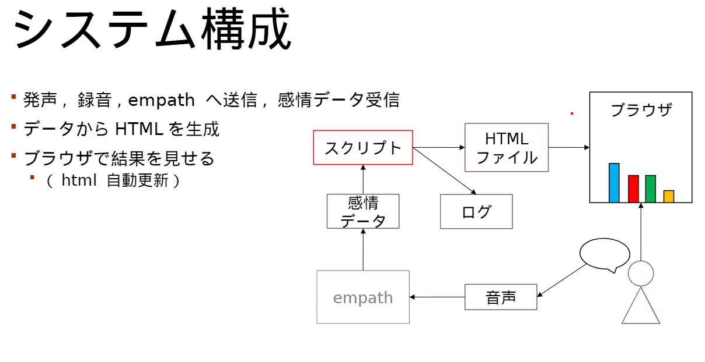

私は主体性がある人間です。大学3年の時、父が鬱病で入院してしまい、普段県外からやりとりしていたのに気付けなくてやるせなさを感じたことと、その頃、遠隔での面接練習で、電話で講師から声がたどたどしく聞こえると注意された為、もし声から感情を解析するシステムがあれば遠隔でも早く父の異変に気づくことができ、また、他者からの客観的な印象を把握して面接練習に活かせるのではないかと考え、その思いとアイデアを前田建設様と大学が募集するICI
INNOVATION AWARDS@KUTに応募しました。
これは、採用されるとそのアイデアを実現するためのアドバイザーと資金100万円の支援が得られるプロジェクトです。
その結果、アイデアが採用され、現在はそのシステムに向けての開発を進めています。このように私は、問題に対して解決策を考え、行動する主体性を持っています。それに加え、大学の講義で学んだ通信に関する基礎知識や、プログラミングスキルも強みとして持っています。

小学校5年生のころ、サッカーの九州大会でホテルにユニフォームを忘れてしまい、とても怒られました。
もちろん、その日の試合は出場できず、ベンチで泣きながら監督に謝りました。
もともと、ランドセルを学校に忘れて帰ったことがあるほど忘れ物が多かったのですが、それ以降、忘れ物がトラウマになり、何度も忘れ物をチェックするようになりました。
授業を毎日予習復習をかかさず行っていたので、大学で３年間連続で、成績優秀賞を受賞しました。
友達に勉強を教えていたので、それが自分のためにもなったと実感しました。
優秀賞の副賞として、JTB旅行券８万円をもらったので、今まで育ててもらった両親にプレゼントしました。
とても喜んでいたので、頑張ってよかったなと思いました。
大学受験に失敗し、一年間浪人生をやっていた時代がありました。家にいると勉強をさぼってしまうと考え、塾に入りました。
しかし、親にお金がないことがわかっていたので、スーパーのレジや、引っ越し、レストランのキッチンなどのアルバイトをしながら勉強をしていました。
特にレストランのバイトが厳しく、ミスをしていつも怒鳴られていたのでとてもつらかったです。
現役時代と違って伸びしろが小さい分、なかなか点数が伸びず、「また落ちたらどうしよう。」という不安が常にあり、一人でマクドナルドで勉強しながら泣いていたこともありました。
しかし、今となっては、「あれほどつらい経験をしたのだから、この先なにがあっても大丈夫！」と自信を持つきっかけとなりました。